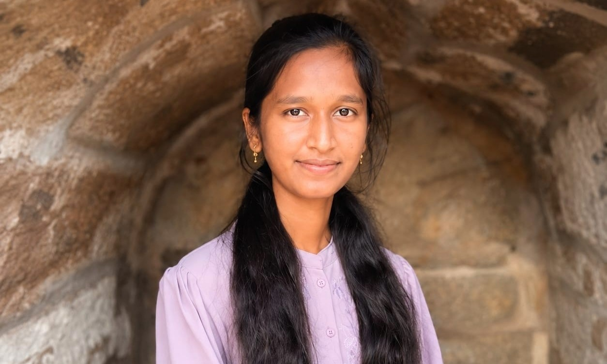

Building expertise in construction planning, quality & analytics.

Download CVGet to know me better
My academic background
SRM Institute of Science and Technology — Directorate of Online Education
2023 – 2026 | Completed 2026
🎓 CGPA 9.7/10 — First Class with DistinctionUniversity College of Engineering Kakinada (Autonomous),JNTUK
2023 – 2027 | CGPA: 7.95/10 (Expected May 2027)
A toolkit built across Civil Engineering & Data Science
Building expertise through hands-on experience
L&T Construction — TIMS Super Speciality Hospital Project, LB Nagar
Where I apply my Civil + Data skills
Developed a detailed Primavera P6 construction schedule for a G+10 building project — created WBS, activities, durations, calendars, milestones and activity relationships, planned sequencing across substructure, superstructure, masonry, finishing, MEP and external works, and analyzed project duration, critical activities and float.
Developed a Power BI dashboard for analyzing construction material testing and quality-control data — created KPI cards, slicers and visualizations to monitor quality performance and identify deviations, supporting data-driven quality monitoring and reporting.
Built a regression model in Python on 1,500+ rows across 10+ features, achieving a 92% R² score. Cleaned, transformed, and published results to GitHub.
Analyzed historical rainfall data using Python and visualization techniques to identify seasonal patterns and trends, and developed visual reports to support civil engineering and environmental analysis.
Developed an intelligent NLP-based classification system leveraging natural language processing techniques to accurately identify and filter spam emails with high precision.
Created a predictive healthcare analytics model using machine learning to assess cardiovascular disease risk factors and enable early detection for better patient outcomes.
Performed comprehensive exploratory data analysis on the Titanic dataset, uncovering survival patterns and demographic insights through statistical analysis and visualization.
Designed an interactive sales performance dashboard providing real-time business intelligence, KPI tracking, and actionable insights for strategic decision-making.
Analyzed retail sales data to identify revenue trends, customer segments, and product performance, delivering data-driven recommendations for business optimization.
Conducted in-depth workforce analytics exploring employee metrics, attrition patterns, and organizational insights to support data-driven HR strategies.
Built interactive business intelligence dashboards with dynamic visualizations, custom measures, and drill-through capabilities for comprehensive data storytelling.
Click any certificate to view it
U.S Art Gallery
May 2025
View Certificate →The Indian Art Fest
April 2025
View Certificate →I'm open to opportunities in construction planning, quality, execution & data science and analytics.
Let's connect and build something great together!